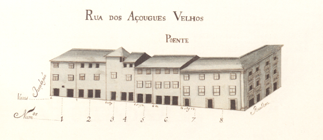
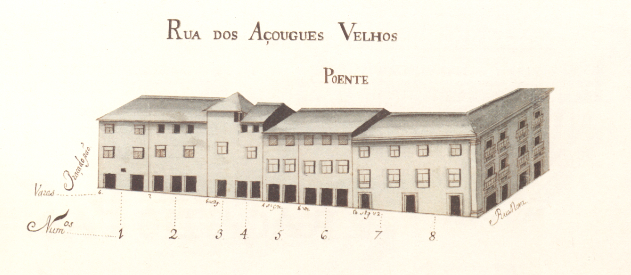

Rua dos Açougues velhos
Imagens antigas:
 

Imagens atuais:


Descrição:
Pequenina rua que liga a fachada da Sé com a rua Nova. Sé com a rua Nova.
Aberta possivelmente na Idade Media nela existiram ate ao sec. XV os açougues da cidade. Nessa data a rua era mais longa, prolongando-se até quase ao início da rua do Poço. sec. XV os açougues da cidade. Nessa data a rua era mais longa, prolongando-se até quase ao início da rua do Poço.
Actualmente poucas alterações de peso há nesta rua quanto ao Mappa e nenhuma respeitante ao seu tamanho e largura. O edifício pertencente à Sé foi porém substancialmente aumentado em altura, apresentando-se hoje radicalmente diferente. Sé foi porém substancialmente aumentado em altura, apresentando-se hoje radicalmente diferente.
Pena foi que as casas dos prazos n.° 3 e 4 desta rua, ja em 1750 com um só inquilino, tivessem sido destruídos, pois apresentavam uma curiosíssima janela de canto e um jogo de telhados estranho. 1750 com um só inquilino, tivessem sido destruídos, pois apresentavam uma curiosíssima janela de canto e um jogo de telhados estranho.
Das duas casas do lado Norte e 6 do Sul pertenciam ao Cabido 1 e 6 respectivamente. Cabido 1 e 6 respectivamente.
Não sabemos quando o seu nome mudou para a rua do Cabido. No mapa de 1857 tem ainda o nome de Travessa dos Açougues Velhos. rua do Cabido. No mapa de 1857 tem ainda o nome de Travessa dos Açougues Velhos.
Lista das casas
-
Número 1 Enfiteuta None Foro None Descrição Corresponde à casa nº16 da Praça do Pão para onde tem a frontaria e serventia principais. Praça do Pão para onde tem a frontaria e serventia principais.
-
Número 2,3,4 Enfiteuta Padre Francisco Xavier de Campos Foro 610 reis e 1 capão Descrição Estas casas foram construídas depois de 1550, em pertenças do nº16, da Praça do Pão e, desde o ano de 1725, constituem um só prazo.1550, em pertenças do nº16, da Praça do Pão e, desde o ano de 1725, constituem um só prazo.
-
Número 5 Enfiteuta Teresa Tomásia, viúva de Agostinho Marques da Silva, ourives Foro 105 reis e 1 galinha Descrição A última porta do nº6, para o lado do norte, é serventia do nº7 da rua Nova. Encontram-se unidas desde o ano de 1641.rua Nova. Encontram-se unidas desde o ano de 1641.
-
Número 6 Enfiteuta Teresa Tomásia, viúva de Agostinho Marques da Silva, ourives Foro 120 reis e 1 galinha Descrição A última porta do nº6, para o lado do norte, é serventia do nº7 da rua Nova. Encontram-se unidas desde o ano de 1641.rua Nova. Encontram-se unidas desde o ano de 1641.
-
Número 7 e 8 Enfiteuta ??? Foro ??? Descrição Desde do ano 1644 que correspondem ao nº5 da Rua Nova de Sousa, para onde têm a frontaria e serventia principais.1644 que correspondem ao nº5 da Rua Nova de Sousa, para onde têm a frontaria e serventia principais.
-
Número 9 Enfiteuta Pedro Pereira Foro 40 reis e 1 galinha Descrição Foi demolida para alargamento das casas do Cabido, depois do ano de 1793.Cabido, depois do ano de 1793.